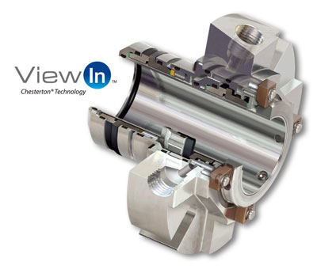

Estos sellos mecánicos de alto rendimiento tienen un diseño modular de cassette único que combina tecnología de sellado avanzada con flexibilidad en mantenimiento y reparación. La reparación se convierte en un proceso de simplemente intercambiar cassettes, lo que hace que sea más rápido y fácil, mientras se reducen significativamente los costos.
Sellos Chesterton:
Chesterton S10 Sello de Cassette Único
Concepto de Sellado Optimizado para la Estandarización en Toda la Planta
Fácil de mantener.
Un gland universal común.
Caras de sello extremadamente estables.

Chesterton S20 Sello Dual Tandem de Cassette
Sello Modular de Alto Rendimiento.
Tecnología de doble sello avanzada con diseño de cassette conveniente.
Anillo de bombeo de alto flujo y capacidad de alto par de torsión.
Diseñado para estandarización, eficiencia y valor.